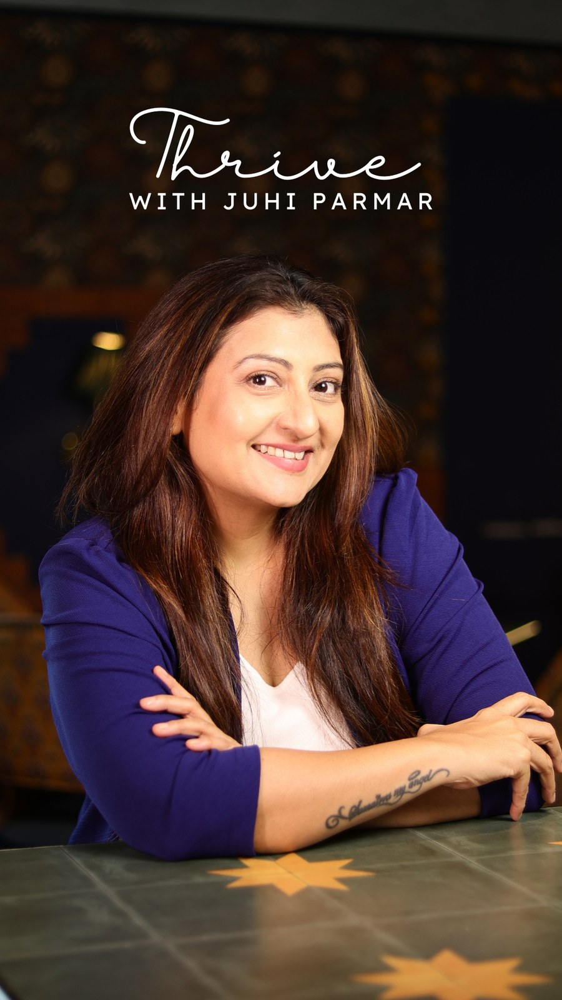

For women who are ready to stop managing life, and start creating it.
⚡ Limited interactive seats · Registration closes 21 Oct
Juhi Parmar
Actor · Women's Emotional Safety Coach
Founder of Thrive with Juhi Parmar · Helping women move from Survival to Conscious Creation.

"Everyone saw me carrying on. Only I knew what and how I was feeling within."
My own journey through a deeply difficult life transition taught me that healing isn't about becoming someone new. It's about finding your way back to the part of yourself that got lost along the way.
Today, that understanding and experience is at the heart of my work with women.
Look closely at an ordinary week. Most women are carrying something quietly.
Overthinking that leaves you mentally exhausted
Conversations replayed at midnight. Decisions made, then unmade, then made again.
Carrying everything alone while appearing entirely capable
The one everyone relies on. The one who absorbs the stress so no one else has to.
Guilt that arrives the moment you choose yourself
Saying yes when every part of you needed to say no. Apologising for resting.
Feeling invisible inside relationships where you give the most
Loving deeply, showing up consistently - yet feeling that the depth you offer is rarely returned to you.
And beneath it all: a quiet grief for the woman you used to be
The one who laughed freely. The one who had dreams that weren't just about keeping life functioning. The one you keep promising you'll get back to.
A quiet, persistent anger you rarely let anyone see
Not because you're an angry person - but because you've been swallowing your needs for so long that resentment has begun to settle in.
A relationship with your body that feels disconnected
Fatigue that sleep doesn't fix. Tension in your shoulders that never fully leaves. The sense that you've been living entirely in your head.
Second-guessing your own voice
Softening your opinions so they ask less of the room. Wondering if you're being "too sensitive" or "expecting too much."
An underlying sense of not being enough
No matter how much you achieve, contribute, or manage - there is a quiet whisper that asks whether any of it is truly sufficient.
Fear of what happens if you stop
If you don't hold it together, who will? So you keep going, long past the point where your body and mind asked you to rest.
There is a name for this.
Emotional Survival
And most women have never been given a name for what they are experiencing.
The way out isn't more trying.
It's EMOTIONAL SAFETY.
The foundation for coming back to yourself.
I Recognise This →And yet, somehow, you keep finding yourself back in the same emotional place.
What if the missing piece isn't another strategy?
What if it is the emotional foundation from which you are trying to create your life?
Over two live days, you'll discover:
This isn't about becoming someone else. It's about finding your way back to yourself - and discovering what becomes possible when you do.
Your conscious self - or everything you've learned to survive?
Three things, working together.
01
Release
Creating space for the new to enter, by releasing the old baggage - patterns, beliefs, conditioning, memories, and the mental and emotional blocks that have been holding you in place.
02
Emotional Safety
You cannot create differently while constantly protecting yourself emotionally.
03
Conscious Creation
Once you are no longer led entirely by old emotional patterns, you can begin making choices from who you are becoming - not simply from what you've learned to survive.
If you have read the books, saved the posts and sat through the sessions - and still nothing moved - this is built to break that pattern.
Two days, taught in full.
A Note on the Format
This is not a recorded course you watch while doing something else. It is a live, experiential process designed to be felt, integrated and shared in real time. No recordings will be available. Come as you are, from wherever you are, with two days set aside for yourself.
Two days to understand what's been running your life - and begin consciously creating it.
⏳ Registration Closes In:
Registration closes 21 Oct · No prior experience needed
Join Me Now - ₹999 ₹499 →A Woman on a Mission
For more than two decades, millions of people have known me on screen. What they didn't see was the journey happening beneath the surface.
Through some of the most challenging transitions of my life, I discovered that the strength women are praised for - carrying on, staying composed, holding everything together - can quietly become the very thing that keeps them trapped in survival.
I didn't heal by managing better. I healed by creating emotional safety within myself - by finally giving my nervous system, my feelings, and my voice the permission they had waited years for.
Today, alongside my acting career, I coach women through this exact transformation - blending emotional awareness work, EFT Tapping, nervous system regulation and practical self-leadership.
"You don't need another thing to manage. You need a way back to yourself."
You don't need to be in crisis to benefit from this work. You only need to be ready for something different.
Voices of Real Transformation
What women experience when they move from emotional survival into inner safety.
"For the first time in years, the knot in my stomach actually relaxed. Juhi creates a space where you don't have to pretend you have it all together."
Priya S.
Working Mother & Leader
"I thought I was just chronically tired. Juhi showed me I was living in chronic emotional survival. The EFT tapping session was truly life-altering."
Ananya M.
Senior Consultant
"The shift from managing everyone else's emotions to finally choosing myself without guilt was worth 100x the registration fee."
Meera K.
Creative Entrepreneur